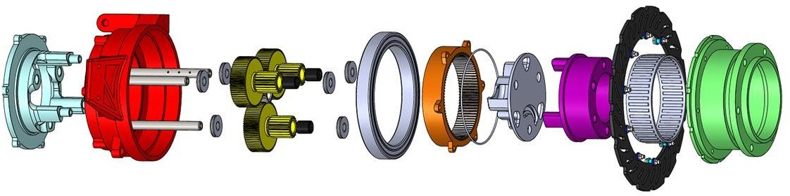
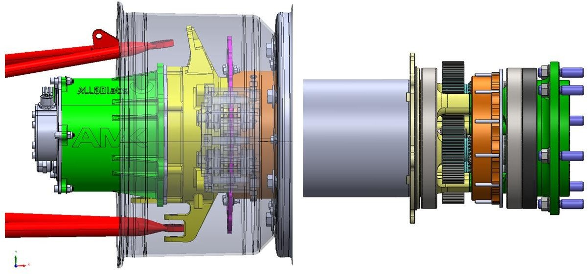

← All projects
Project 02 of 06 Oxford Brookes Racing, 2023
Modular planetary gearbox
The 2023 Oxford Brookes Racing car needed its motor and planetary gearbox integrated efficiently. I worked on a modular design that is simpler to assemble and maintain.
The problem
The motor and the planetary gearbox had to be integrated efficiently in the 2023 car.
What I focused on
I focused on simpler assembly and maintenance. A modular design cuts build time and reduces the chance of mistakes during race preparation.
How I designed and checked it
I designed the parts in Siemens NX and Creo. I ran structural and thermal FEA in Ansys, then correlated the results against strain gauge test data. That closed the loop between the simulation and the hardware.
Images




